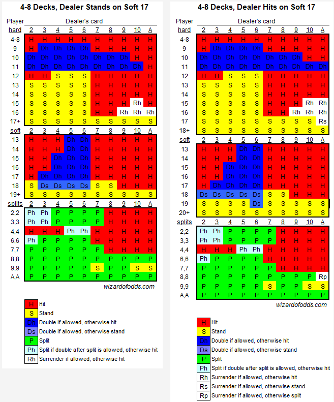

The Monte Carlo method is used to calculate the odds in Blackjack.
The Monte Carlo method is a statistical analysis method which is based on repeated, computational simulations to arrive at normalized likelihoods of events.
The probabilities in Blackjack will be different depending on the number of decks used and the number of players.
In general, the probability of you winning a round of Blackjack is 42.22%.
In general, the probability of dealer winning a round of Blackjack is 49.1%.
In general, the probability of a push or tie is the remaining 8.48%.
Basic Strategy Charts
You can use the basic strategy guides in Blackjack, which have been created by mathematicians using the Monte Carlo method.
However, it should be noted that, even with a perfect basic strategy, you only gain about 1% advantage with the house still having around 0.5% edge.
This means that, for every $100 you wager, you expect to lose 50 cents.
Therefore, players should aim to win extra on certain hands (blackjacks, double-downs, splits).
Click Here to go to a web page where you can practice the basic strategies.

As can be seen above, different rules of the game result in variations in strategies.
If you want to just memorize one of them as a base reference, I'd recommend using the one where the dealer stands on soft 17 (S17).
This is because the cost in errors from employing the wrong strategy happens to be less in soft 17 (S17).
Simplified S17 Strategy
Here is a simplified version of the basic strategy guide under the S17 rule.